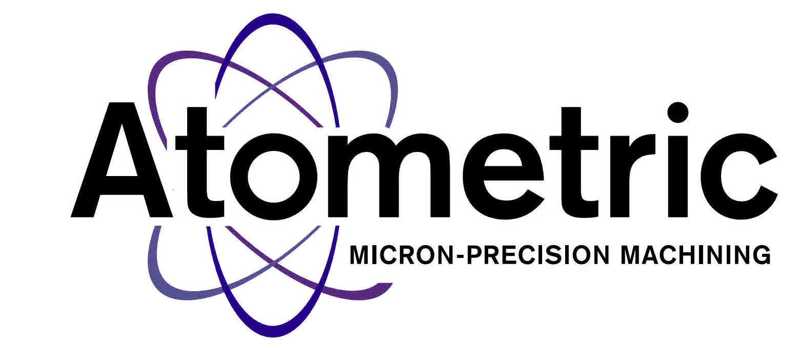
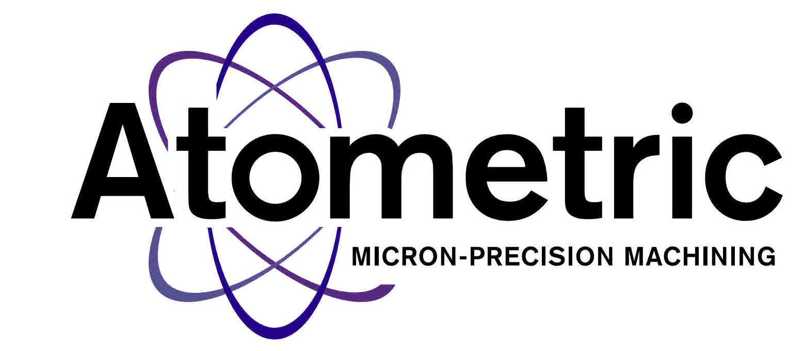

Highly Powerful. Effective. Precise. Benefit by getting reliable, efficient equipment and manufacturing solutions for many materials and applications.

We build CNC MicroMilling Machining Systems and provide contract MicroMachining services. We have material such as : surgical stainless steel, copper and titanium.
Our MicroMachining Center ensures precision with our linear motor construction & 100,000 RPM Servo spindle.